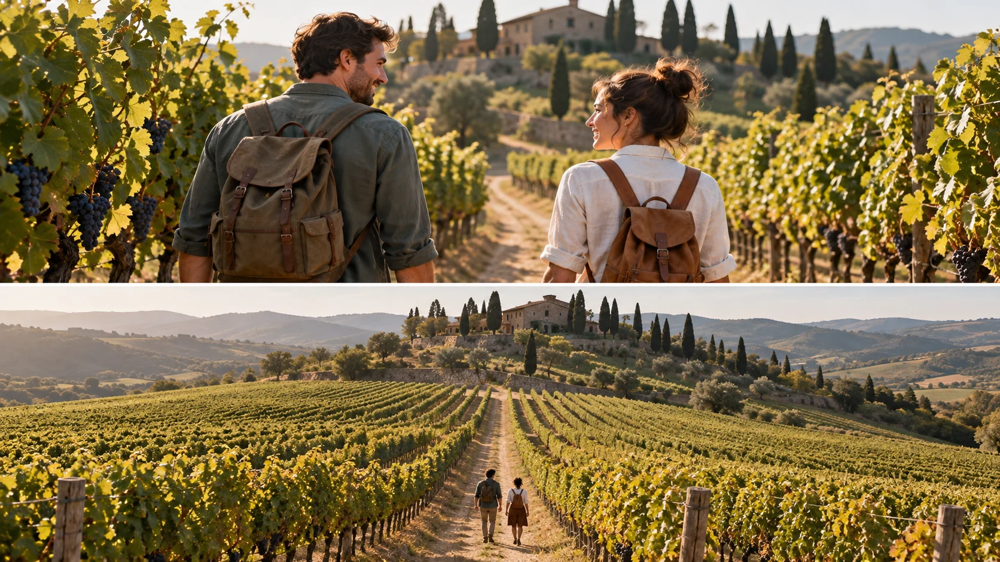

P13 · 중급 · 제작·활용
Zac & Mia: 인물 추적이 풍경 공개로 변하는 컷
인물의 행동을 읽는 시간과 넓은 장소를 공개하는 시간을 구분해 설계한다.
그림에서 확인할 세 가지인물과 배경의 비중이 바뀌는 시점을 설계한다.
1가까운 인물
위쪽 화면에서 배낭을 멘 두 사람이 길을 따라 걷는 방향을 본다. 아래 넓은 화면에서도 배낭과 길의 위치로 같은 인물을 찾을 수 있는지 살핀다.
2포도밭의 질서
넓은 화면에서 포도밭 줄과 길이 인물의 위치를 설명하는지 살핀다. 배경의 반복무늬가 오히려 인물을 숨기는지도 비교한다.
3정보의 교환
가까운 그림에서 읽히던 행동과 넓은 그림에서 새로 읽히는 공간을 나란히 적는다. 얻는 정보와 잃는 정보가 동시에 있음을 확인한다.
촬영 설계
촬영을 이렇게 설계한다
인물을 먼저 읽을 시간
교육 제안: 넓어지기 전에 관객이 인물의 행동과 진행 방향을 이해할 수 있는 구도를 만든다. 시작부터 배경이 지배적이면 이후의 공간 공개가 줄 새 정보가 적어진다.
공개할 공간 선택
교육 제안: 포도밭의 줄무늬, 언덕, 길 중 마지막 화면에서 중요할 공간 정보를 고른다. 인물이 작아지는 대가로 무엇이 더 읽히는지 설명할 수 있어야 한다.
도착 프레임 유지
교육 제안: 넓어진 구도를 잠시 비교하며 인물을 다시 찾을 수 있는지 확인한다. 위치를 잃으면 이동 범위를 줄이거나 인물과 배경의 대비가 나은 방향으로 다시 설계한다.
Zac & Mia 제작진은 포도밭의 인물 추적이 넓은 항공 리빌로 바뀐다고 설명한다.
원본 영상Zac & Mia: 인물 추적이 풍경 공개로 변하는 컷
1. 인물의 크기
예고편에서 인물 추적과 넓은 포도밭 장면의 포함 여부를 먼저 확인한다. 해당 컷에서 인물의 행동을 읽을 수 있는 크기가 언제 달라지는지 본다.
2. 공개의 이유
포도밭이 넓게 보이는 구간이 있다면 길과 인물의 관계를 살핀다. 장소 공개가 인물의 위치나 상황에 어떤 정보를 더하는지 판단한다.
3. 원작의 전환 시점
원본에서 인물의 동작과 화면이 넓어지는 타이밍을 확인한다. 작품 전체의 감정 효과는 해당 구간 전후를 보기 전 확정하지 않는다.
재생이 제한되면 원본 영상 새 창을 이용하세요.
제작진 설명 · 한국어 요약 번역
구도와 타이밍으로 단순한 컷에 서사를 더하다
장면 구성
원문 요약 번역: DLP Aerials는 포도밭에서 주인공을 따라가는 추적 숏을 촬영했다고 설명한다.
숏은 인물을 중간 거리로 잡다가 넓은 항공 리빌로 풍경 전체를 드러낸다.
장비 선택
DJI Inspire 2를 현장 촬영에 처음 투입했고 X5S RAW 카메라를 실었다고 한다.
제작사는 이를 화질과 다이내믹 레인지를 높이는 선택으로 소개한다.
연출의 의미
기술적으로 단순한 컷도 구도와 타이밍으로 서사를 도울 수 있다는 취지다.
이동 거리와 인물 동작은 본문에 없다.
Kling 프롬프트단문 인과 체인 · 16:9
내가 직접 만들어 본다
걷는 두 사람을 가까이서 읽게 한 뒤, 뒤로 물러나며 그들이 놓인 포도밭의 규모를 드러낸다.
- S01배낭을 멘 두 사람이 포도밭 사이의 흙길을 걷고 있다.
- S02두 사람은 카메라에서 멀어지는 방향으로 걷고 있다.
- S03한 사람은 주황색 배낭을, 다른 사람은 초록색 배낭을 멘다.
- S04드론 시점은 두 사람의 뒤쪽 위 가까운 곳이다.
- S05길 양옆으로 포도나무 줄이 이어진다.
- S06해 질 무렵의 따뜻한 빛이 두 사람의 등을 비춘다.
- S07가로 16:9 화면에서 두 사람은 아래쪽 중앙에 있다.
[네거티브]
- 사람이 두 명보다 많아지거나 적어지는 것 금지
- 두 사람이 카메라 쪽으로 돌아서거나 멈추는 것 금지
- 배낭 색이 바뀌거나 같은 색이 되는 것 금지
- 시점이 사람 정면이나 높은 하늘로 바뀌는 것 금지
- 포도나무 줄이 사라지거나 건물이 생기는 것 금지
- 밤이거나 차가운 빛이 되는 것 금지
- 두 사람이 화면 가운데 위나 한쪽 끝에 놓이는 것 금지
- S01Two people with backpacks are walking along a dirt path between vineyards.
- S02The two are walking away from the camera.
- S03One wears an orange backpack and the other a green backpack.
- S04The drone viewpoint is close, behind and above the two.
- S05Rows of grapevines continue on both sides of the path.
- S06Warm light of the early evening shines on their backs.
- S07In the horizontal 16:9 frame, the two are at the lower center.
[Negative]
- Do not show more or fewer than two people.
- Do not let the two turn toward the camera or stop.
- Do not change the backpack colors or make them the same color.
- Do not move the viewpoint to the front of the people or high in the sky.
- Do not remove the grapevine rows or add buildings.
- Do not make it night or lit by cold light.
- Do not put the two at the upper middle or at one edge of the frame.
- S01영상은 첫 프레임의 구도에서 시작한다.
- S02두 사람은 길을 따라 앞으로 계속 걷는다.
- S03드론은 두 사람의 뒤에서 같은 속도로 따라간다.
- S04그래서 잠시 두 사람의 걸음과 배낭이 또렷하게 읽힌다.
- S05그다음 드론이 천천히 위로 올라가며 뒤로 물러난다.
- S06올라가는 만큼 포도밭의 줄무늬가 화면 가득 퍼진다.
- S07길과 언덕이 드러나면서 두 사람은 점점 작아진다.
- S08그래도 주황색과 초록색 배낭 때문에 두 사람은 계속 찾을 수 있다.
- S09영상은 넓은 포도밭 위에서 두 사람이 길 위의 작은 점으로 남은 상태에서 끝난다.
- S10두 사람의 옷과 배낭의 색, 포도밭의 모습은 유지된다.
[네거티브]
- 첫 장면과 다른 구도에서 시작하는 것 금지
- 두 사람이 멈추거나 뒤돌아보는 것 금지
- 드론이 사람을 앞질러 가거나 속도가 달라지는 것 금지
- 두 사람이 처음부터 작게 보이는 것 금지
- 드론이 갑자기 솟아오르거나 빠르게 물러나는 것 금지
- 포도밭 줄무늬가 두 사람 위를 덮는 것 금지
- 두 사람이 사라지거나 한 명으로 합쳐지는 것 금지
- 두 사람의 위치가 배경에 묻혀 찾을 수 없게 되는 것 금지
- 두 사람이 사라진 채 끝나는 것 금지
- 두 사람의 옷, 배낭 색, 포도밭의 모습이 바뀌는 것 금지
- S01The video starts from the composition of the first frame.
- S02The two keep walking forward along the path.
- S03The drone follows behind them at the same speed.
- S04So for a moment their steps and backpacks read clearly.
- S05Then the drone slowly rises and pulls back.
- S06As it rises, the stripes of the vineyard spread across the whole frame.
- S07As the path and the hills are revealed, the two grow smaller.
- S08Still, the orange and green backpacks keep the two easy to find.
- S09The video ends over the wide vineyard with the two remaining as small figures on the path.
- S10The colors of their clothes and backpacks and the look of the vineyard remain unchanged.
[Negative]
- Do not start from a composition different from the first frame.
- Do not let the two stop or look back.
- Do not let the drone pass the people or change speed.
- Do not make the two look small from the start.
- Do not let the drone shoot upward or pull back fast.
- Do not let the vineyard stripes cover the two people.
- Do not let the two disappear or merge into one.
- Do not let the two blend into the background so they cannot be found.
- Do not end with the two gone.
- Do not change the colors of their clothes and backpacks or the look of the vineyard.
- S01포도밭 사이 길을 배낭 멘 두 사람이 걷는다.
- S02영상은 하나의 연속 쇼트다.
- S03처음 10초 동안 드론은 두 사람 가까이에서 뒤따른다.
- S04두 사람의 걸음과 방향이 먼저 읽힌다.
- S05배경은 아직 뒤쪽에 머문다.
- S06다음 10초 동안 드론은 뒤로 물러나며 높이 오른다.
- S07드론이 오르기 때문에 포도밭 줄무늬가 화면에 펼쳐진다.
- S08두 사람은 길 위에서 점점 작아진다.
- S09그래도 배낭과 길이 두 사람의 위치를 알려 준다.
- S10마지막 10초 동안 드론은 높은 곳에서 멈춘다.
- S11언덕과 길과 포도밭이 한 화면에 공개된다.
- S12두 사람은 끝까지 길 위의 같은 방향으로 걷는다.
[네거티브]
- 두 사람이 길이 아닌 포도밭 한가운데를 걷는 것 금지
- 가까운 컷과 넓은 컷이 따로 이어 붙는 것 금지
- 처음부터 높이 떠서 두 사람이 점으로 보이는 것 금지
- 걸음이 멈추거나 방향이 모호해지는 것 금지
- 시작부터 배경이 화면을 지배해 인물이 묻히는 것 금지
- 갑자기 솟구쳐 인물의 위치를 잃게 되는 것 금지
- 오르는데도 포도밭 줄무늬가 가려져 있는 것 금지
- 물러나는 동안 두 사람의 크기가 그대로인 것 금지
- 줄무늬 속에 두 사람이 완전히 사라지는 것 금지
- 멈추지 못하고 계속 올라 장면이 흔들리는 것 금지
- 언덕이나 길이 빠져 공개된 공간이 비어 보이는 것 금지
- 두 사람이 돌아서 반대 방향으로 걷는 것 금지
- S01배낭을 멘 두 사람이 포도밭 사이의 흙길을 걷고 있다.
- S02두 사람은 카메라에서 멀어지는 방향으로 걷고 있다.
- S03한 사람은 주황색 배낭을, 다른 사람은 초록색 배낭을 멘다.
- S04드론 시점은 두 사람의 뒤쪽 위 가까운 곳이다.
- S05길 양옆으로 포도나무 줄이 이어진다.
- S06해 질 무렵의 따뜻한 빛이 두 사람의 등을 비춘다.
- S07영상은 가로 16:9의 하나의 연속 쇼트다.
- S08처음 10초 동안 두 사람은 길을 따라 앞으로 계속 걷는다.
- S09드론은 두 사람의 뒤에서 같은 속도로 따라간다.
- S10그래서 두 사람의 걸음과 배낭이 또렷하게 읽힌다.
- S11다음 10초 동안 드론이 천천히 위로 올라가며 뒤로 물러난다.
- S12올라가는 만큼 포도밭의 줄무늬가 화면 가득 퍼진다.
- S13길과 언덕이 드러나면서 두 사람은 점점 작아진다.
- S14그래도 주황색과 초록색 배낭 때문에 두 사람은 계속 찾을 수 있다.
- S15마지막 10초 동안 드론은 높은 곳에서 속도를 줄이며 멈춘다.
- S16그래서 넓은 포도밭과 길의 모양이 안정적으로 읽힌다.
- S17영상은 두 사람이 길 위의 작은 점으로 남은 상태에서 끝난다.
- S18두 사람의 옷과 배낭의 색, 포도밭의 모습은 유지된다.
[네거티브]
- 사람이 두 명보다 많아지거나 적어지는 것 금지
- 두 사람이 카메라 쪽으로 돌아서거나 멈추는 것 금지
- 배낭 색이 바뀌거나 같은 색이 되는 것 금지
- 시점이 사람 정면이나 높은 하늘로 바뀌는 것 금지
- 포도나무 줄이 사라지거나 건물이 생기는 것 금지
- 밤이거나 차가운 빛이 되는 것 금지
- 여러 쇼트로 쪼개지거나 컷이 들어가는 것 금지
- 처음 10초에 드론이 오르내리는 것 금지
- 드론이 사람을 앞질러 가거나 속도가 달라지는 것 금지
- 걸음과 배낭이 흐려지는 것 금지
- 다음 10초에 드론이 옆으로 도는 것 금지
- 포도밭 줄무늬가 두 사람 위를 덮는 것 금지
- 두 사람이 사라지거나 한 명으로 합쳐지는 것 금지
- 두 사람의 위치가 배경에 묻혀 찾을 수 없게 되는 것 금지
- 마지막 10초에 드론이 다시 내려오거나 급정지하는 것 금지
- 길의 모양이 흐려지거나 왜곡되는 것 금지
- 두 사람이 화면에서 사라지거나 컷으로 끝나는 것 금지
- 두 사람의 옷, 배낭 색, 포도밭의 모습이 바뀌는 것 금지
- S01Two people with backpacks are walking along a dirt path between vineyards.
- S02The two are walking away from the camera.
- S03One wears an orange backpack and the other a green backpack.
- S04The drone viewpoint is close, behind and above the two.
- S05Rows of grapevines continue on both sides of the path.
- S06Warm light of the early evening shines on their backs.
- S07The video is one continuous shot in horizontal 16:9.
- S08For the first 10 seconds, the two keep walking forward along the path.
- S09The drone follows behind them at the same speed.
- S10So their steps and backpacks read clearly.
- S11For the next 10 seconds, the drone slowly rises and pulls back.
- S12As it rises, the stripes of the vineyard spread across the whole frame.
- S13As the path and the hills are revealed, the two grow smaller.
- S14Still, the orange and green backpacks keep the two easy to find.
- S15During the last 10 seconds, the drone slows down at a high position and stops.
- S16So the wide vineyard and the shape of the path read steadily.
- S17The video ends with the two remaining as small figures on the path.
- S18The colors of their clothes and backpacks and the look of the vineyard remain unchanged.
[Negative]
- Do not show more or fewer than two people.
- Do not let the two turn toward the camera or stop.
- Do not change the backpack colors or make them the same color.
- Do not move the viewpoint to the front of the people or high in the sky.
- Do not remove the grapevine rows or add buildings.
- Do not make it night or lit by cold light.
- Do not split into several shots or add cuts.
- Do not let the drone rise or drop in the first 10 seconds.
- Do not let the drone pass the people or change speed.
- Do not blur their steps and backpacks.
- Do not let the drone circle sideways in the next 10 seconds.
- Do not let the vineyard stripes cover the two people.
- Do not let the two disappear or merge into one.
- Do not let the two blend into the background so they cannot be found.
- Do not let the drone come back down or stop abruptly in the last 10 seconds.
- Do not blur or distort the shape of the path.
- Do not make the two vanish from the frame or end with a cut.
- Do not change the colors of their clothes and backpacks or the look of the vineyard.
결과에서 볼 것
- 물러나기 전에 두 사람의 행동과 배낭이 읽혔는가
- 넓어진 화면에서도 두 사람을 다시 찾을 수 있는가
- 포도밭의 줄무늬가 두 사람을 가리지 않고 위치를 설명하는가